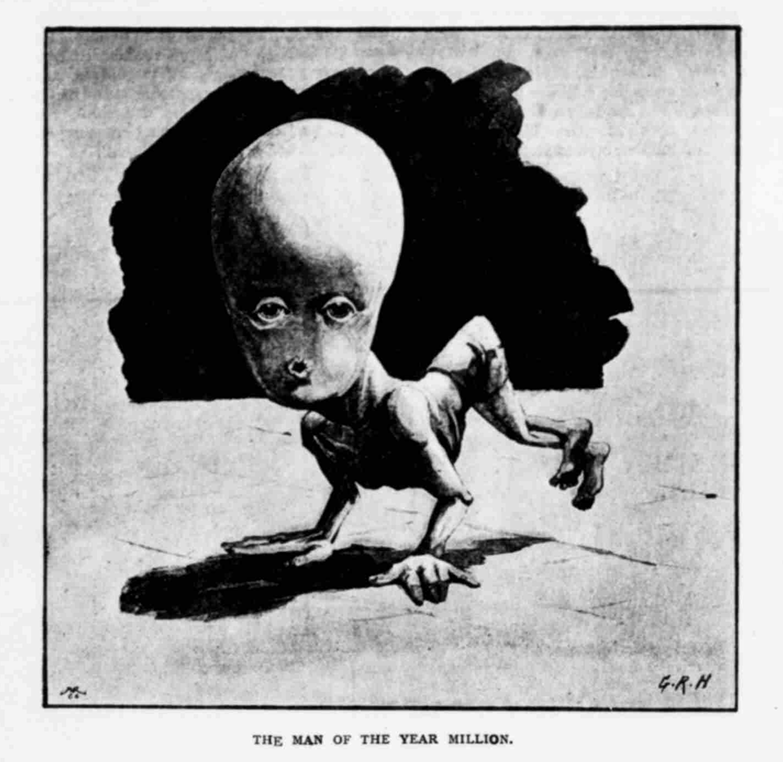
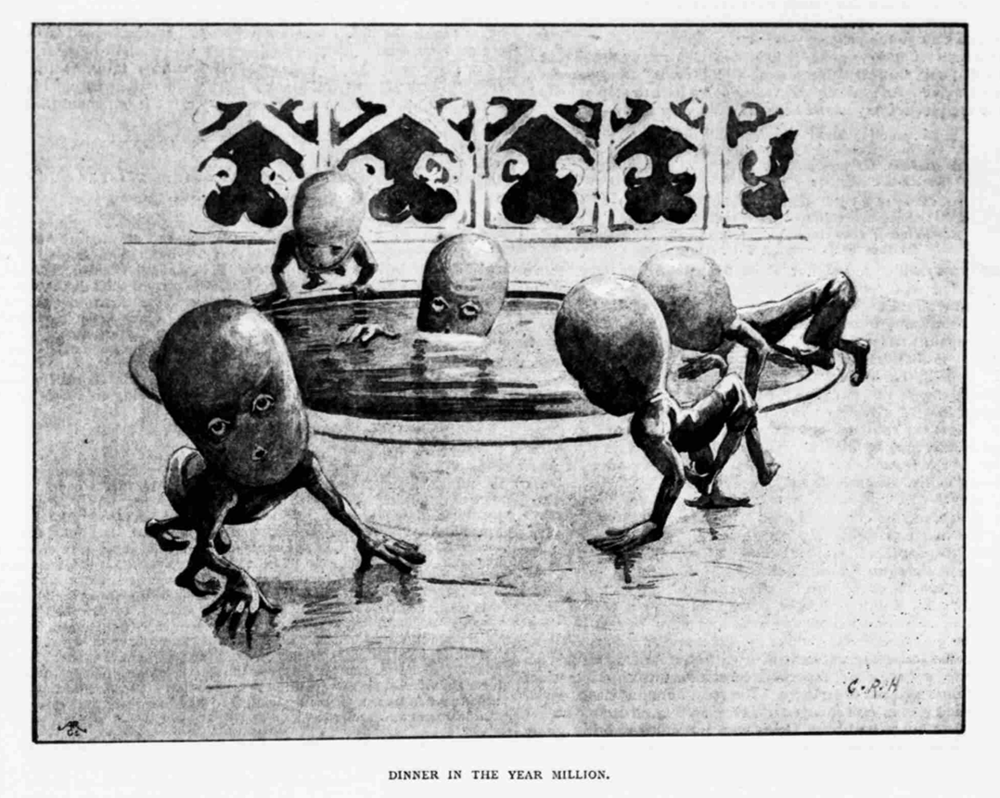

From The War of the Worlds (1898) by H.G. Wells:
It is worthy of remark that a certain speculative writer of quasi-scientific repute, writing long before the Martian invasion, did forecast for man a final structure not unlike the actual Martian condition. His prophecy, I remember, appeared in November or December, 1893, in a long-defunct publication, the Pall Mall Budget, and I recall a caricature of it in a pre-Martian periodical called Punch.
This prophecy, as published in the Pall Mall Gazette (6th November 1893, p.3) and later in an illustrated form in the Pall Mall Budget (16th November 1893, p.1796), was written by Wells himself. Originally called The Man of the Year Million it would eventually become a chapter in Certain Personal Matters (1897, p.161), retitled as Of A Book Unwritten.
The text itself is an exploration of future human evolution, based on the scientific principles understood at the time. It posits that humans, being creatures of the mind, would survive natural selection by means of intelligence. Their bodies will atrophy, their brains enlarge, and their hands—being the means of communication between the world and the brain—would become more dexterous. This future human would not even digest its own food, instead manufacturing and bathing in a nutritive fluid.
We are also given a vision of a future Earth, a cold planet that is almost devoid of all life, save for these future humans who live deep underground. For whilst the modern human must depend on the diversity of life to sustain themselves, these future humans can manufacture all of their food from the Earth itself. Thus, sustaining other life no longer becomes necessary, and humanity spends its final years alone.
There are many parallels between this future humanity and the Martians of The War of the Worlds. Both creatures are beings of intelligence with large minds and dexterous appendages. Each comes from a world that is in the late stages of cooling, and both are the masters of their worlds, having eradicated the commensals and morbidities that once plagued their civilisations.
Also from The War of the Worlds:
There is many a true word written in jest, and here in the Martians we have beyond dispute the actual accomplishment of such a suppression of the animal side of the organism by the intelligence. To me it is quite credible that the Martians may be descended from beings not unlike ourselves, by a gradual development of brain and hands (the latter giving rise to the two bunches of delicate tentacles at last) at the expense of the rest of the body. Without the body the brain would, of course, become a mere selfish intelligence, without any of the emotional substratum of the human being.
The serio-comic periodical Punch would parody this text on the 25th of November 1893.

Archives of the Pall Mall Gazette and the illustrated Pall Mall Budget version are available through the British Newspaper Archive. Alternatively, scans of both articles are available at the bottom of this webpage.
There is also an archive of the 1894 Tuapeka Times version available courtesy of the National Library of New Zealand. The 1897 version of the text, Of A Book Unwritten, can be found on Project Gutenberg as a chapter in, Certain Personal Matters.
Full references and direct links to all sources can be found at the bottom of this page.
What follows is a transcription of The Man of the Year Million as it was published in the Pall Mall Budget in 1893. The two-column layout of the original article is difficult to recreate in a linear webpage. As such, I have included the illustrations in positions I feel are most appropriate.
Freazy Warr, 17th December 2025.
Accomplished literature is all very well in its way, no doubt, but much more fascinating to the contemplative man are the books that have not been written. These latter are no trouble to hold; there are no pages to turn over. One can read them in bed on sleepless nights without a candle. Turning to another topic, primitive man, in the works of the descriptive anthropologist, is certainly a very entertaining and quaint person; but the man of the future, if we only had the facts, would appeal to us more strongly. Yet where are the books? As Ruskin has said somewhere, apropos of Darwin, it is not what man has been, but what he will be, that should interest us.
The contemplative man in his easy chair, pondering this saying, suddenly beholds in the fire, through the blue haze of his pipe, one of these great unwritten volumes. It is large in size, heavy in lettering, seemingly by one Professor Holzkopf, presumably Professor at Weissnichtwo. “The Necessary Characters of the Man of the Remote Future Deduced from the Existing Stream of Tendency,” is the title. The worthy Professor is severely scientific in his method, and deliberate and cautious in his deductions, the contemplative man discovers as he pursues his theme, and yet the conclusions are, to say the least, remarkable. We must figure the excellent Professor expounding the matter at great length, voluminously technical, but the contemplative man—since he has access to the only copy—is clearly at liberty to make such extracts and abstracts as he chooses for the unscientific reader. Here, for instance, is something of practicable lucidity that he considers admits of quotation.
“The theory of evolution,” writes the Professor, “is now universally accepted by zoologists and botanists, and it is applied unreservedly to man. Some question, indeed, whether it fits his soul, but all agree it accounts for his body. Man, we are assured, is descended from ape-like ancestors, moulded by circumstances into men, and these apes again were derived from ancestral forms of a lower order, and so up from the primordial protoplasmic jelly.. Clearly then, man, unless the order of the universe has come to and end, will undergo further modification in the future, and at last cease to be man, giving rise to some other type of animated being. At once the fascinating question arises. What will this being be? Let us consider for a little the plastic influences at work upon our species.
“Just as the bird is the creature of the wing, and all is moulded and modified to flying, and just as the fish is the creature that swims, and has had to meet the inflexible conditions of a problem in hydrodynamics, so man is the creature of the brain; he will live by intelligence, and not by physical strength, if he live at all. So that much is purely ‘animal’ about him is being, and must be, beyond all question, suppressed in his ultimate development. Evolution is no mechanical tendency making for perfection according to the ideas current in the year of grace 1892; it is simply the continual adaptation of plastic life for good or evil, to the circumstances that sorround it. … We notice this decay of the animal part around us now, in the loss of teeth and hair, in the dwindling hands and feet of men, in their smaller jaws, and slighter mouths and ears. Man now does by wit and machinery and verbal agreement what he once did by bodily toil; for once he had to catch his dinner, capture his wife, run away from his enemies, and continually exercise himself, for love of himself, to perform these duties well. But now all this is changed. Cabs, trains, trams, render speed unnecessary, the pursuit of food becomes easier; his wife is no longer hunted, but rather, in view of the crowded matrimonial market, seeks him out. One needs wits now to live, and physical activity is a drug, a snare even; it seeks artificial outlets and overflows in games. Athleticism takes up time and cripples a man in his competitive examinations and in business. So is your fleshy man handicapped against his subtler brother? He is unsuccessful in life, does not marry. The better adapted survive.”
The coming man, then, will clearly have a larger brain and slighter body than the present. But the Professor makes one exception to this. “The human hand, since it is the teacher and interpreter of the brain, will become constantly more powerful and subtle as the rest of the musculature dwindles.”
When in the physiology of these children of men, with their expanding brains, their great sensitive hands, and diminishing bodies, great changes were necessarily worked. “We see now,” says the Professor, “in the more intellectual sections of humanity and increasing sensitiveness to stimulants, a growing inability to grapple with such a matter as alcohol, for instance. No longer can men drink a bottle full of port; some cannot drink tea; it is too exciting for their highly-wrought nervous systems. The process will go on, and the Sir Wilfrid Lawson of some near generation may find it his duty and pleasure to make the silvery spray of his wisdom tintinnabulate against the tea-tray. These facts lead naturally to the comprehension of others. Fresh raw meat was once a dish for a king. Now refined persons scarcely touch meat unless it is cunningly disguised. Again, consider the case of turnips; the raw root is now a thing almost uneatable, but once upon a time a turnip must have been a rare and fortunate fund, to be torn up with delirious eagerness and devoured in ecstacy. The time will come when the change will affect all the other fruits of the earth. Even now only the young of mankind eat apples raw—the young always preserving ancestral characteristics after their disappearance in the adult. Some day, boys even will regard apples without emotion. The boy of the future, one must believe, will gaze on an apple with the same unspeculative languor with which he now regards a flint” in the absence of a cat.
“Furthermore, fresh chemical discoveries came into action as modifying influences upon men. In the prehistoric period even, man’s mouth had ceased to be an instrument for grasping food; it is still growing continually less prehensile, his front teeth are smaller, his lips thinner and less muscular; he has a new organ, a mandible not of irreparable tissue, but of bone and steel—a knife and fork. There is no reason why things should stop at the partial artificial division thus afforded; there is every reason, on the contrary, to believe my statement that some cunning exterior mechanism will presently masticate and insalivate his inner, relieve his diminishing salivary glands and teeth, and at last altogether abolish them.”
Then what is not needed disappears. What use is there for external ears, nose, and brow ridges now? The two latter once protected the eye from injury in conflict and in falls, but in these days we keep on our legs and at peace. Directing his thoughts in this way, the reader may presently conjure up a dim, strange vision of the latter-day face: “Eyes large, lustrous, beautiful, soulful; above them, no longer separated by rugged brow bridges, is the top of the head, a glistening, hairless dome, terete and beautiful; no craggy nose rises to disturb by its unmeaning shadows the symmetry of that calm face, no vestigial ears project; the mouth is a small, perfectly round aperture toothless and gumless, jawless, unanimal, no futile emotions disturbing its roundness as it lies, like the harvest moon or the evening star, in the wide firmament of the face.” Such is the face the Professor beholds in the future.
Of course parallel modifications will also affect the body and limbs. “Every day so many hours and so much energy are required for digestions; a gross torpidity, a carnal lethargy, seizes on mortal men after dinner. This may and can be avoided. Man’s knowledge of organic chemistry widens daily. Already he can supplement the gastric glands by artificial devices. Every doctor who administers physic implies that the bodily functions may be artificially superseded. We have pepsine, pancreatine artificial gastric acid—I know not what like mixtures. Why, then, should not the stomach be ultimately superannuated altogether? A man who could not only leave his dinner to be cooked, but also leave it to be masticated and digested, would have vast social advantages over his food-digesting fellow. This is, let me remind you, the calmest, most passionless, and scientific working out of the future forms of things from the data of the present. At this stage the following facts may perhaps stimulate your imagination. There can be no doubt that many of the arthropods, a division of animals more ancient and even now more prevalent than the vertebrate, have undergone more phylogenetic modification”—a beautiful phrase—“than even the most modified of vertebrate animals. Simple forms like the lobsters display a primitive structure parallel with that of the fishes. However, in such a form as the degraded ‘Chondracanthus,’ the structure has diverged far more widely from its original type than in man. Among some of these most highly modified crustaceans the whole of the alimentary canal—that is, all the food-digesting and food-absorbing parts—form a useless solid cord: the animal nourished—it is a parasite—by absorption of the nutritive fluid in which it swims. Is there any absolute impossibility in supposing man to be destined for a similar change; to imagine him no longer dining, with unwieldy paraphernalia of servants and plates, upon food queerly dyed and distorted, but nourishing himself in elegant simplicity by immersion in a tub of nutritive fluid?
”There grows upon the impatient imagination a building, a dome of crystal, across the translucent surface of which flushes of the most glorious and pure prismatic colours pass and fade and change. In the centre of this transparent chameleon-tinted dome is a circular white marble basin filled with some clear, mobile, amber liquid, and in this plunge and float strange beings. Are they birds?
“They are the descendants of man—at dinner. Watch them as they hop on their hands—a method of progression advocated already by Björnsen—about the pure white marble floor. Great hands they have, enormous brains, soft liquid, soulful eyes. Their whole muscular system, their legs, their abdomens, are shrivelled to nothing, a dangling, degraded pendant to their minds.”
The further visions of the professor are less alluring.
“The animals and plants die away before men, except such as he preserves for his food or delight, or such as maintain a precarious footing about him as commensals and parasites. These vermin and pests must succumb sooner or later to his untiring inventiveness and incessantly growing discipline. When he learns (the chemists are doubtless getting towards the secret now) to do the work of chlorophyll without the plant, then his necessity for other animals and plants upon the earth will disappear. Sooner of later, where there is no power of resistance and no necessity there comes extinction. In the last days man will be alone on the earth, and his food will be won by the chemists from the dead rocks and sunlight.
“And—one may learn the full reason in that explicit and painfully right book, the ‘Data of Ethics’—the irrational fellowship of man will give place to an intellectual co-operation, and emotion fall within the scheme of reason. Undoubtedly it is a long time yet, but a long time is nothing in the face of eternity, and every man who thinks of these things must look eternity in the face.”
Then the earth is ever radiating away heat into space, the Professor reminds us. And so at last comes a vision of earthly cherubim, hopping heads, great unemotional intelligences, and little hearts, fighting together perforce and fiercely against the cold that grips them tighter and tighter. For the world is cooling—slowing and inevitably it grows colder as the years roll by. “We must imagine these creatures,” says the Professor, “in galleries and laboratories deep down in the bowels of the earth. The whole world will be snow-covered and piled with ice; all animals, all vegetation vanished, except this last branch of the tree of life. The last men have gone even deeper, following the diminishing heat of the planet, and vast steel shafts and ventilators make way for the air they need.”
So with a glimpse of these human tadpoles, in their deep close gallery, with their boring machinery ringing away, and artificial lights glaring and casting black shadows, the Professor’s horoscope concludes. Humanity in dismal retreat before the cold, changed beyond recognition. Yet the Professor is reasonable enough, his facts are current science, his methods orderly. The contemplative man shivers at the prospect, starts up to poke the fire, and the whole of this remarkable book this is not written vanishes straightway in the smoke of his pipe. This is the great advantage of this unwritten literature: there is no bother in changing the books. Our contemplative man consoles himself for the destiny of the species with the lost portion of Kubla Khan.
The War of the Worlds (1898) by H.G. Wells, available through Project Gutenberg.
The Man of the Year Million by H.G. Wells in Pall Mall Gazette (6th November 1893), available through the British Newspaper Archive.
The Man of the Year Million by H.G. Wells in Pall Mall Budget (16th November 1893), available through the British Newspaper Archive.
The Man of the Year Million by H.G. Wells in Tuapeka Times (1894), available through Papers Past courtesy of the National Library of New Zealand.
Of A Book Unwritten in Certain Personal Matters (1897) by H.G. Wells, available through Project Gutenberg.
1,000,000 A.D. in Punch, or the London Charivari (1893) by unknown, available through the Internet Archive. The original article was published on the 25th of November 1893. The link provided is to volumes 104 and 105 of the biannual almanack. It should be on page 250 of volume 105, but I recommend searching for the keyword ‘pepsine’ in the PDF they provide.
This webpage, with proof of when it was published, can be viewed here on Github.
PDF of The Man of the Year Million as it appeared in the Pall Mall Gazette. Courtesy of the British Newspaper Archive.
PDF of The Man of the Year Million as it appeared in the Pall Mall Budget.
PNG of The Man of the Year Million as it appeared in the Pall Mall Budget.
PNG of ‘THE MAN OF THE YEAR MILLION.’ illustration as it appeared in the Pall Mall Budget.
PNG of ‘DINNER IN THE YEAR MILLION.’ illustration as it appeared in the Pall Mall Budget.
PNG of 1,000,000 A.D. as it appeared in Punch, or the London Charivari.
{kind=link}
{kind=link}
{kind=link}